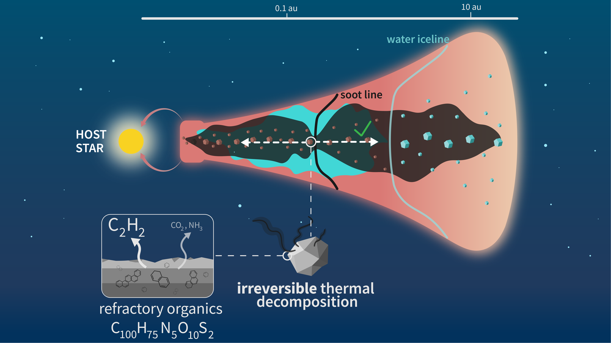

Context
First results obtained with JWST confirmed a trend observed with Spitzer: there seems to exist a dichotomy in the inner disc (< 5 au) gas-phase C/O ratio between discs orbiting star of different masses.
Despite the great interest amongst observers, little theoretical works have attempted to explain this dichotomy. While writing this manuscript, only one existed, Mah et al. (2023), in which C/O ratios above unity can only be achieved through the inward transport of methane from the outer disc.
However, only a little fraction of the total carbon content is stored in volatiles like methane. Most of it is actually stored in refractory material, such as refractory organics.
In this paper, we explored the evolution of the gas-phase C/O ratio incorporating self-consistently refractory organics and their thermal decomposition.
What's been done
We performed 1D simulations to follow the transport of dust and volatiles using the code chemcomp. We introduced a new specie, refractory organics, and the fact that they thermally decompose (see Nakano et al. 2003) instead of sublimating, intact, into the gas-phase like other species (e.g., H2O). We assume that refractory organics dominantly decompose into C2H2.

Key results
The thermal decomposition of refractory organics into C2H2 means that the soot line is permeable to the C-rich gas released at this location by thermal processes. It results in the outward diffusion of C2H2 on several AUs, providing that the Schmidt number is inferior to unity.
The outward diffusion of C-rich gas increases its survival in the disc, and results in a gas-phase C/O ratio well above unity outside the water iceline.
In a similar disc model to Mah et al. (2023) (i.e., low turbulence), we can also explain the dichotomy in inner disc C/O ratio depending on stellar mass. The difference being that the source of carbon in our model are refractory organics, and not methane.
The difference in sourcing material could result in different isotopic signatures, which may allow JWST to disentangle which material is responsible for high C/O ratios: the refractories or the volatiles.